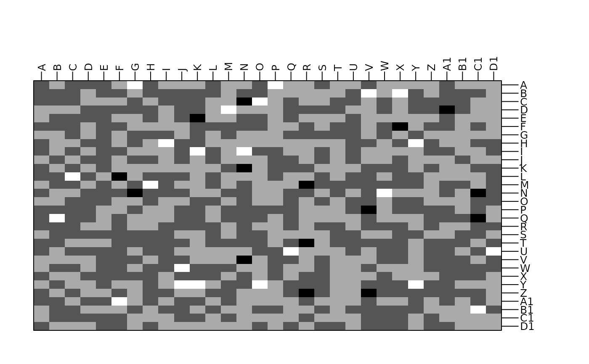
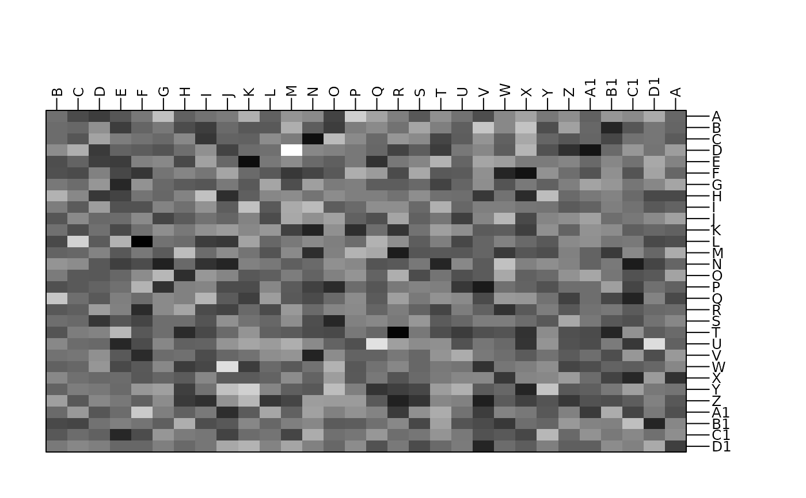
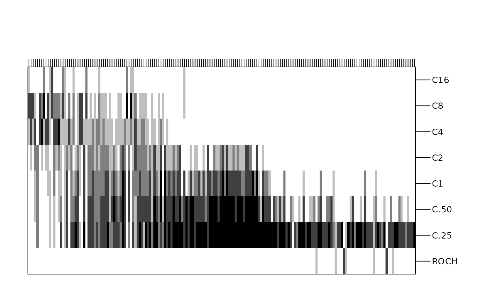

Heat map-like representation with colored cells
table.image.RdThis function represents a two dimensional table plot in which cells are colored according with their value.
Arguments
- dftab
a data frame, matrix, contingency table or distance matrix used to produce the plot
- coordsx
an integer or a vector indicating the columns of
dftabkept- coordsy
an integer or a vector indicating the rows of
dftabkept- labelsx
columns labels
- labelsy
rows labels
- breaks
a vector of values to split
dftab. IfNULL,pretty(dftab, nclass)is used.- nclass
an integer for the number of desired intervals, ignored if
breaksis not missing.- col
a color or a colors vector used for the cells
- plot
a logical indicating if the graphics is displayed
- storeData
a logical indicating if the data should be stored in the returned object. If
FALSE, only the names of the data arguments are stored- add
a logical. If
TRUE, the graphic is superposed to the graphics already plotted in the current device- pos
an integer indicating the position of the environment where the data are stored, relative to the environment where the function is called. Useful only if
storeDataisFALSE- ...
additional graphical parameters (see
adegparandtrellis.par.get)
Value
An object of class ADEg (subclass T.image) or ADEgS (if add is TRUE).
The result is displayed if plot is TRUE.
Author
Alice Julien-Laferriere, Aurelie Siberchicot aurelie.siberchicot@univ-lyon1.fr and Stephane Dray
Examples
tab <- as.table(matrix(rnorm(900), ncol = 30))
g1 <- table.image(tab)

# add a continuous color bar as legend
# update(g1, plegend.drawColorKey = TRUE)
g2 <- table.image(tab, n = 100, coordsx = c(30, 1:29), plegend.drawKey = FALSE)

data(rpjdl, package = "ade4")
X <- data.frame(t(rpjdl$fau))
Y <- data.frame(t(rpjdl$mil))
coa1 <- ade4::dudi.coa(X, scannf = FALSE)
g3 <- table.image(Y, coordsx = rank(coa1$co[, 1]), coordsy = 1:8, nclas = 5,
labelsx = "", plegend.drawKey = FALSE)
